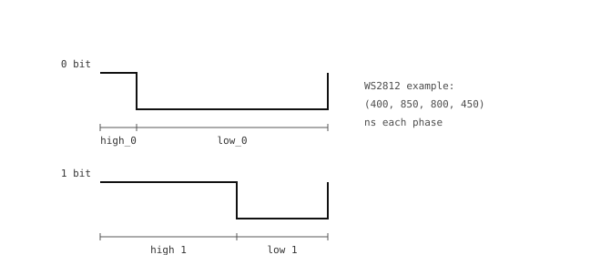

3.17. Flux de bits et mesure d’impulsions¶
Certains appareils ont besoin de motifs d’impulsions précisément temporisés plutôt que d’un signal PWM à fréquence constante. Une LED RGB WS2812 encode chaque bit comme une impulsion d’une largeur spécifique ; un télémètre ultrasonique HC-SR04 répond par une impulsion d’écho dont la largeur est le temps de vol aller-retour ; une télécommande IR envoie un en-tête suivi de bits de données sous forme de séquences marche-arrêt.
Le module machine dispose de deux fonctions pour ce type de GPIO à temporisation précise :
bitstream()envoie un train d’impulsions avec une temporisation distincte pour les bits0et1.time_pulse_us()mesure la largeur d’une impulsion entrante en microsecondes.
3.17.1. Envoyer un flux de bits¶
machine.bitstream() prend une broche, un encodage, une spécification de temporisation et les octets à envoyer. L’encodage le plus courant (0) est la modulation de durée d’impulsion haut-bas : chaque bit est une impulsion haute d’une certaine largeur suivie d’une impulsion basse d’une autre largeur, les bits 0 et 1 ayant des temporisations distinctes.

L’encodage de durée d’impulsion haut-bas : un 0 et un 1 se composent chacun d’une phase haute suivie d’une phase basse, avec des largeurs distinctes.¶
L’exemple canonique est la LED RGB WS2812 (NeoPixel), qui attend des bits à 800 kHz avec ces temporisations :
0: 400 ns haut, puis 850 ns bas.1: 800 ns haut, puis 450 ns bas.
from machine import Pin, bitstream
pin = Pin("P7", Pin.OUT)
# (high_0, low_0, high_1, low_1) in nanoseconds
timing = (400, 850, 800, 450)
# one LED: GRB order, three bytes per LED (red shown here)
bitstream(pin, 0, timing, b"\x00\xff\x00")
Le MCU génère les impulsions par bit-banging aux largeurs demandées ; sur les caméras assez rapides pour cela, la temporisation est précise à quelques dizaines de nanosecondes près.
Avertissement
bitstream() désactive toutes les interruptions pendant toute la transmission afin de garder un contrôle précis sur la temporisation des impulsions. La durée de l’appel évolue linéairement avec le nombre d’octets – à la temporisation WS2812 (environ 10 µs par octet), envoyer 100 octets met le CPU en pause pendant environ 1 ms, 1000 octets pendant 10 ms, et 10000 octets pendant 100 ms complètes. Tout ce qui dépasse quelques centaines d’octets par appel risque de provoquer des blocages perceptibles – découpez les longues mises à jour en plus petits blocs, l’appel rendant la main entre chaque bloc pour que le reste du script puisse s’exécuter.
Note
Pour piloter spécifiquement les bandes WS2812 / NeoPixel, le module neopixel enveloppe bitstream() dans une interface de plus haut niveau qui gère le réagencement de l’ordre des couleurs et les mises à jour groupées des bandes. Faites directement appel à bitstream() lorsque le protocole n’est pas le WS2812 mais correspond tout de même à une forme PDM haut-bas.
3.17.2. Mesurer une impulsion entrante¶
machine.time_pulse_us() mesure la largeur d’une seule impulsion sur une broche. Elle attend que la ligne atteigne le niveau spécifié (le début de l’impulsion), puis mesure combien de temps la ligne reste à ce niveau (la fin de l’impulsion), et renvoie la durée en microsecondes.
L’usage classique est un capteur de distance ultrasonique HC-SR04. La caméra envoie une impulsion de déclenchement de 10 µs, puis attend que la broche d’écho renvoie une impulsion dont la largeur est le temps aller-retour du son :
import time
from machine import Pin, time_pulse_us
trigger = Pin("P7", Pin.OUT, value=0)
echo = Pin("P8", Pin.IN)
while True:
trigger.value(1)
time.sleep_us(10)
trigger.value(0)
width = time_pulse_us(echo, 1, timeout_us=30_000)
if width > 0:
# sound at ~343 m/s; round trip / 2 / 343 = distance (m)
distance_cm = (width * 343) / 2 / 10_000
print(distance_cm, "cm")
time.sleep_ms(100)
Le troisième argument est le délai d’expiration en microsecondes, appliqué séparément à « attendre le début de l’impulsion » et « attendre la fin de l’impulsion ». En cas d’expiration, la fonction renvoie une valeur négative identifiant la phase qui a échoué : -2 si l’impulsion n’a jamais commencé, -1 si elle a commencé mais ne s’est jamais terminée dans la fenêtre.
Les deux moitiés du délai d’expiration comptent pour les capteurs réels. Un HC-SR04 peut mettre une à deux millisecondes à démarrer son écho, et l’écho lui-même peut durer des dizaines de millisecondes pour des objets lointains. Dimensionner timeout_us à la portée maximale nécessaire garde la mesure bornée.